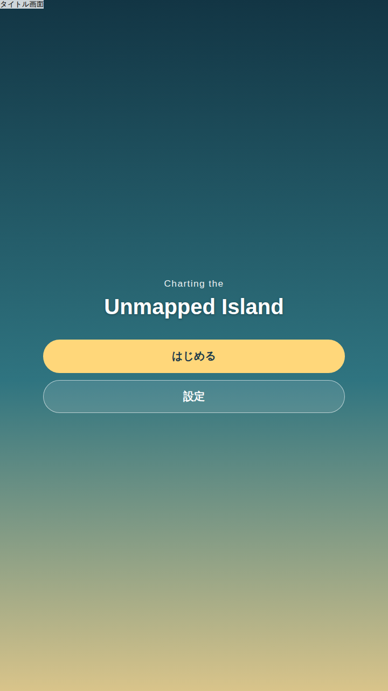
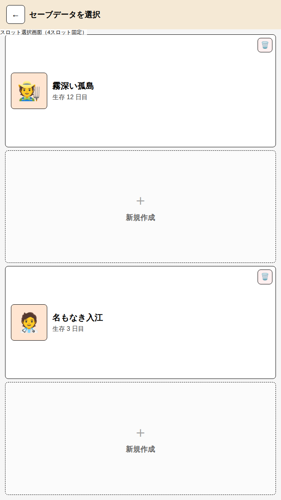
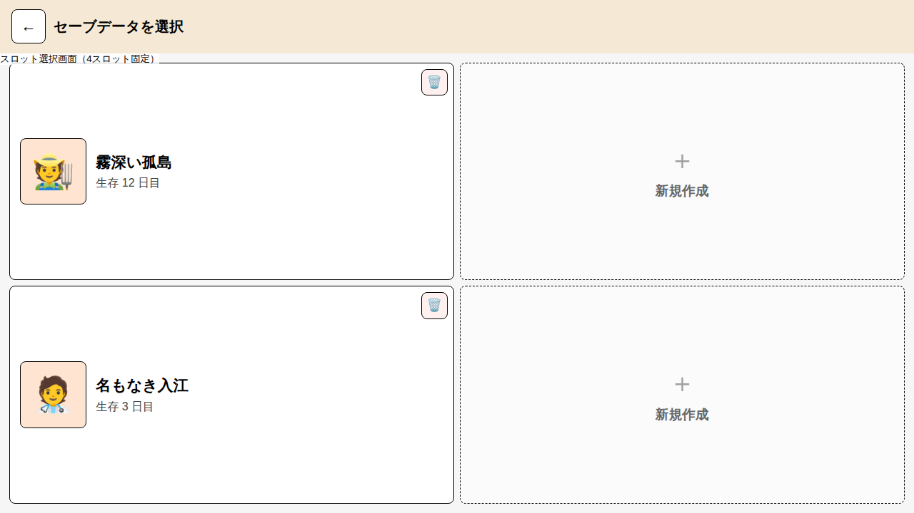
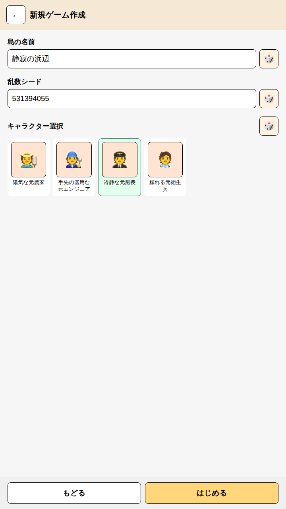
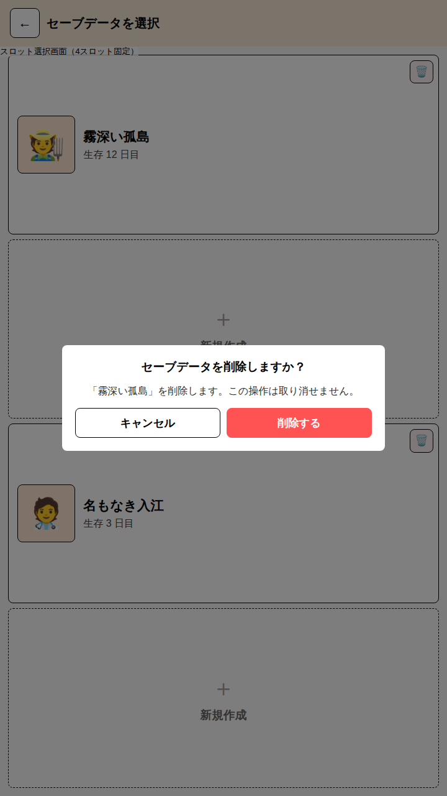

StartScreen
スタート画面・セーブ選択画面
ゲーム起動時のタイトル画面、セーブスロット選択画面、新規ゲーム作成画面を検討するモックです。
画面レイアウト検討と同じ
u（= 画面短辺 ÷ 1080）単位・カード意匠を流用し、
縦型・横型両対応のレスポンシブなスタンドアロン HTML
として作成しています。
セーブデータの保存先・スキーマ・削除の扱いなど、画面設計を超えた決定は セーブデータ管理を参照してください。本ドキュメントは画面構成のみを扱います。
画面構成
- タイトル画面: ロゴと「はじめる」ボタン。「はじめる」はスロット選択画面へ遷移する （セーブの有無によらず常にスロット選択を経由する。1スロットに固定して自動継続する方式は採らない。 複数スロットのうちどれを続けるか・どれを新規に使うかを毎回明示させるため）。
- セーブスロット選択画面: 4スロット固定。空きスロットは新規ゲーム作成画面への入口、 既存セーブは選択でそのまま再開（本モックでは再開後の画面は範囲外）。
- 新規ゲーム作成画面: 空きスロットを選んだときに開く。島の名前・乱数シード・ キャラクター選択の3項目が最低限必要な入力で、いずれも横にランダム入力ボタン（🎲）を添える （手入力の手間を省くため。ランダムボタンは値を埋めるだけで、そのまま手直しもできる）。
設計原則
- スロット数は4固定: スロット追加のスクロールや可変長リストを考慮しない。空きスロットの判定は スロット配列の要素が存在するかどうかだけで行う（別途「空きフラグ」を持たない）。
- 画面の向きでスロットの並びだけが変わる:
縦型はスロットカードを縦に4つ積む1列、
横型は2×2グリッド。スロットカード自体のデザイン（ポートレート・島名・生存日数・削除ボタン）は
向きによらず共通で、
.slot-gridのgrid-template-columns/grid-template-rowsの 違いだけで並びを切り替える（画面レイアウト検討のグリッド切り替え方針を踏襲）。 - 削除は確認必須: スロットカード右上の🗑️ボタンはモーダルで削除対象の島名と 「取り消せない」旨を明示してから削除する。誤タップで進行データを失わせないための最低限の防御。
- ランダム入力ボタンは値を埋めるだけ: 生成後もテキストフィールドは編集可能なままにし、 「ランダムに出た値を手直しする」という使い方を妨げない。
- 新規ゲーム作成画面はセーブ選択画面から独立した画面: 入力項目が3つ（名前・シード・ キャラクター選択）とまとまった量になるため、モーダルではなく専用画面として「もどる」で スロット選択へ戻れるようにする。
HTML モック
タイトル画面から「はじめる」→ 空きスロットのタップ → 新規ゲーム作成画面という一連の遷移、 および既存スロットの削除確認モーダルまで、実際にクリックして試せる簡易な画面遷移を JavaScript で実装しています（永続化は行わず、モック内のメモリ上の状態のみ）。
スクリーンショット
タイトル画面

セーブスロット選択画面（縦型・4つ縦積み）

セーブスロット選択画面（横型・2×2グリッド）

新規ゲーム作成画面

削除確認モーダル
